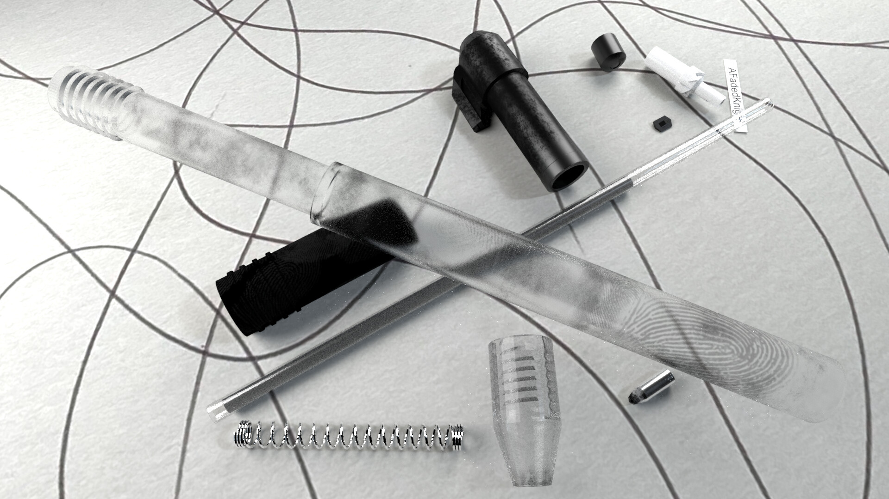

This project further helped me in creating accurate one to one recreations of a real world objects in a 3D software.
One of the first things we needed to make for my second CGI class was a fully modeled and textured pen. The idea of the assignment was to take a pen you had and photograph your own reference images of the pen to help you recreate it to the correct size and scale in Maya.
As one of the requirements being that one of the renders needed to be an exploded view, this required taking a lot of reference photos as well as breaking down the real life pen to create a perfect representation of every piece in 3D.

This project further helped me in creating accurate one to one recreations of a real world objects in a 3D software.